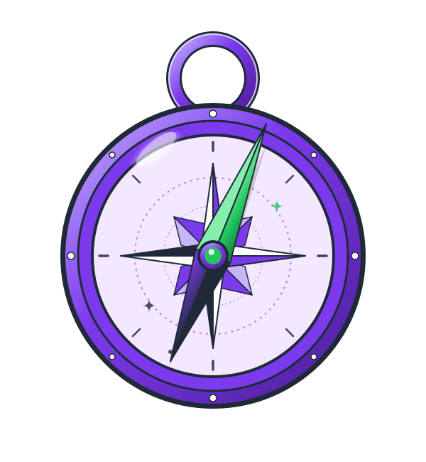
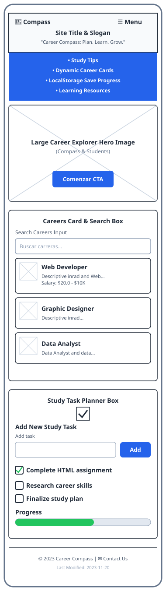
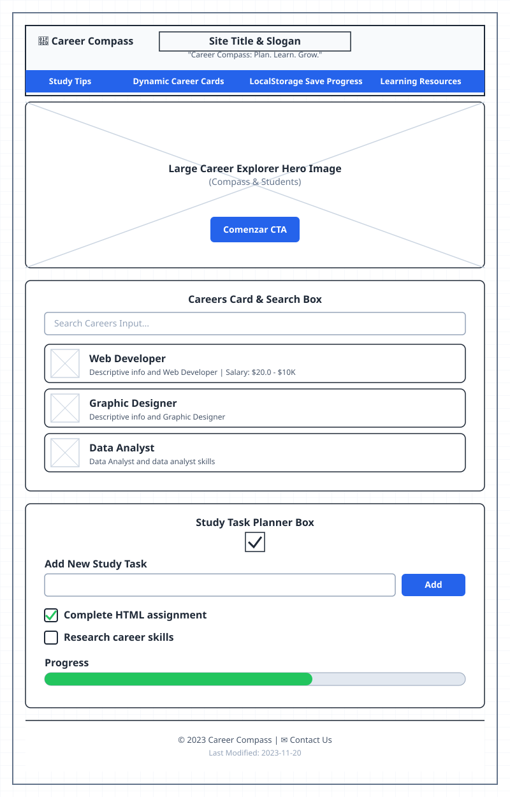

Primary Purple
#7C3AED
Header, navigation, buttons, links, icons, and highlights.
Site Planning Document

I chose the name Career Compass because the website is designed to help students organize their studies, improve productivity, and explore different career paths. Like a compass, the website guides users toward their academic and professional goals.
Optional domain: career-compass.org
Career Compass is a website created to help students stay organized, improve their productivity, and explore career opportunities. The website will include a study planner, career information, learning resources, productivity tips, and a contact form.
#7C3AED
Header, navigation, buttons, links, icons, and highlights.
#F3E8FF
Section backgrounds and cards.
#1F2937
Headings and important text.
#FFFFFF
Main background.
#22C55E
Completed tasks
Used for headings, navigation, buttons, and important titles.
Used for paragraphs, forms, cards, and general body text.

